Replacing a Runflat Tire or a UHP Tire
36 12 005 - Replacing a runflat tire or a UHP tire

Note:
UHP tire = Ultra High Performance tire
UHP tires are tires with an aspect ratio (H:B) ≤ 45% or tires with a speed index ≥"V"
Note:
Follow the fitting machine manufacturer's operating instructions.
It is absolutely essential to ensure that the equipment is in proper working condition and that there is no damage to the disc wheel and tire.
After completion of work, balance wheels Stationary Wheel Balancing.

Important!
Only fitting machines which are approved for fitting runflat and UHP tires may be used!
Please refer to the operating instructions of the respective fitting machine for details of the exact fitting procedure.
Use only BMW-approved plastic-covered tire irons.
Use only BMW-approved tire mounting paste.
For approved wheel/tire combinations, tire makes and optional equipments, refer to KSD CD.
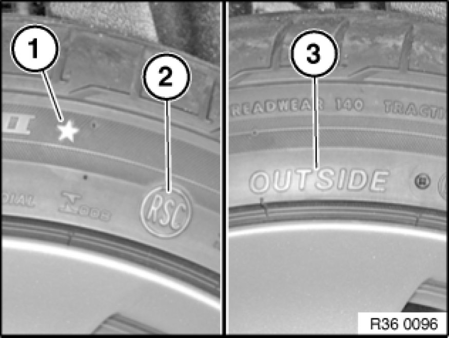
Note:
Pay attention to different tire markings:
- Item (1) Marking denoting BMW-approved tires. Ensure that only BMW-approved tires are fitted.
- Item (2) RSC is the abbreviation for Runflat System Component (runflat tires).
- Item (3) Outside. The tire must be fitted so that the wording Outside is always situated on the outside of the rim.
Important!
Many tires are directional!
The arrow on the tire must point in the "Forward" direction of rotation!
Important!
Before removal:
- Observe a tire temperature of min. +15 °C (refer to Recommendations for heating)
- Clean wheel/tire unit
- Remove valve insert (deflate tire)
- Remove old balance weights
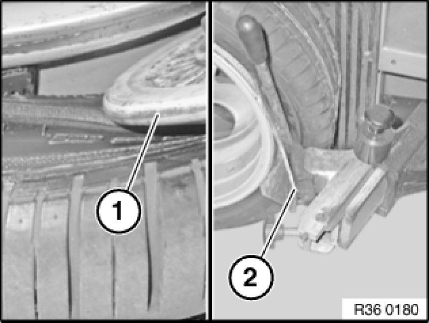
Removal - upper bead:
Unseat bead if possible with unseating roller (1) from rim flange.
Note position of sensor - do not unseat in this area!
If using a pressing-off horn (2), unseat 3 to 4 times around circumference max. 1 cm from rim flange.
Observe pressing-off/unseating limitation.
Start at 90° or 270°.
Do not position at 0° or 180° (refer to following Fig. no. 3601-81).
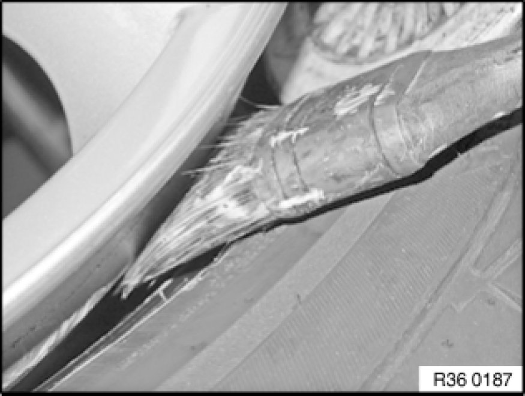
Apply sufficient antiseize compound as deeply as possible between rim and tire.
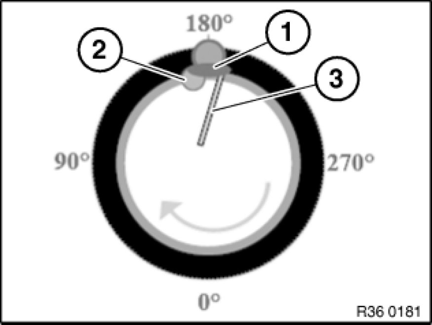
Position fitting head (1) in direction of rotation before valve (2).
Position holding-down element at 0° to hold tire in well.
Position tire iron (3) on fitting head.
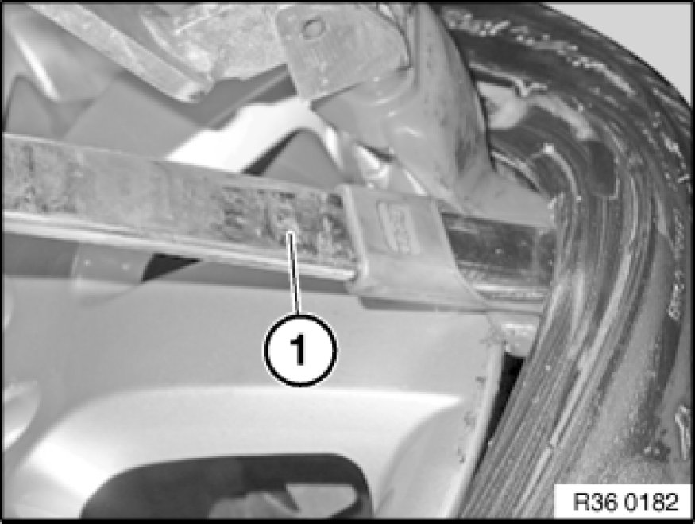
Lever bead with tire iron (1) over rim flange.
Important!
Avoid damaging the rim by using a suitable tire iron with protective coating.
Make sure there is sufficient lubrication between bead and rim flange; apply antiseize compound if necessary.
Allow fitting machine to rotate slowly and relieve tension on holding-down element and rollers during rotation.
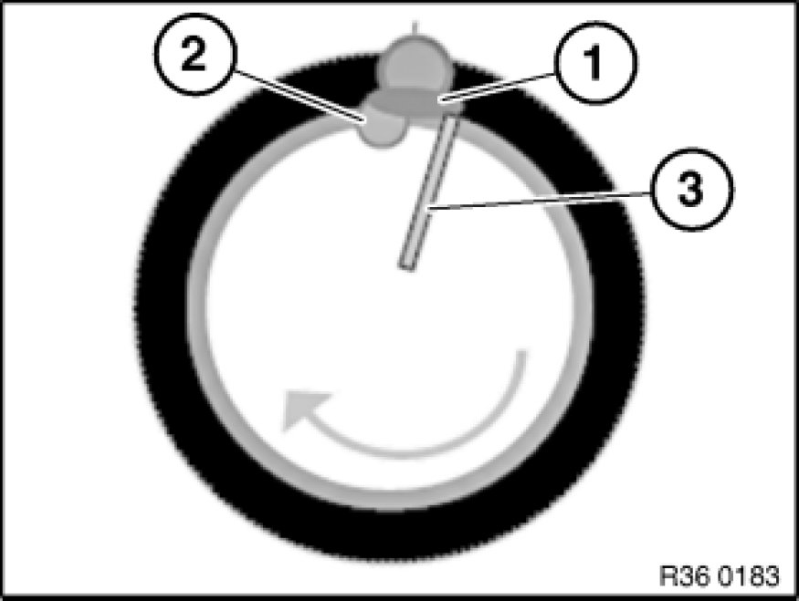
Removal - lower bead:
Important!
Apply sufficient antiseize compound between rim and tire.
Position fitting head (1) in direction of rotation before sensor (2).
Position tire iron (3) on fitting head (1).
Tire bead must be positioned entirely in well opposite fitting head (1).
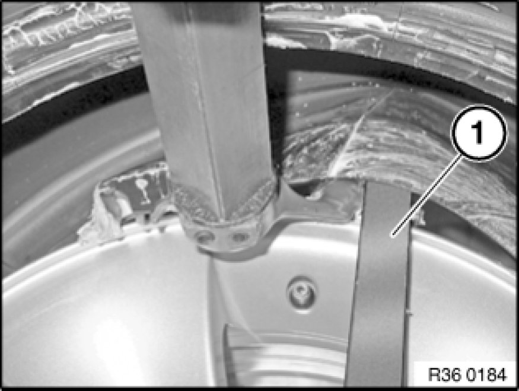
Lever bead with tire iron (1) over rim flange.
Important!
Avoid damaging the rim by using a suitable tire iron with protective coating.
Allow fitting machine to rotate slowly.
Observe before fitting:
- Observe tire temperature of min. +15 °C. Refer to Recommendation for heating
- Clean wheel/tire
- Check rim for burrs, wear and other damage
- Clean tire beads and check for evidence of damage
- Check RDC sensor for damage
- Replace rubber valve
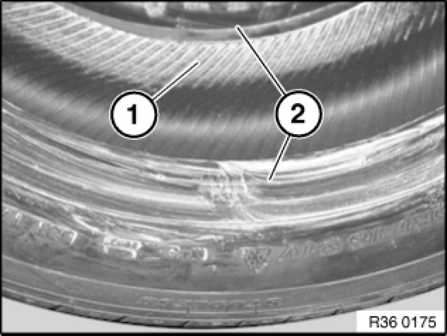
Before fitting:
Important!
Apply antiseize compound to inside of upper bead (1) and to outside of upper and lower sidewall (2) up to upper decorative line.
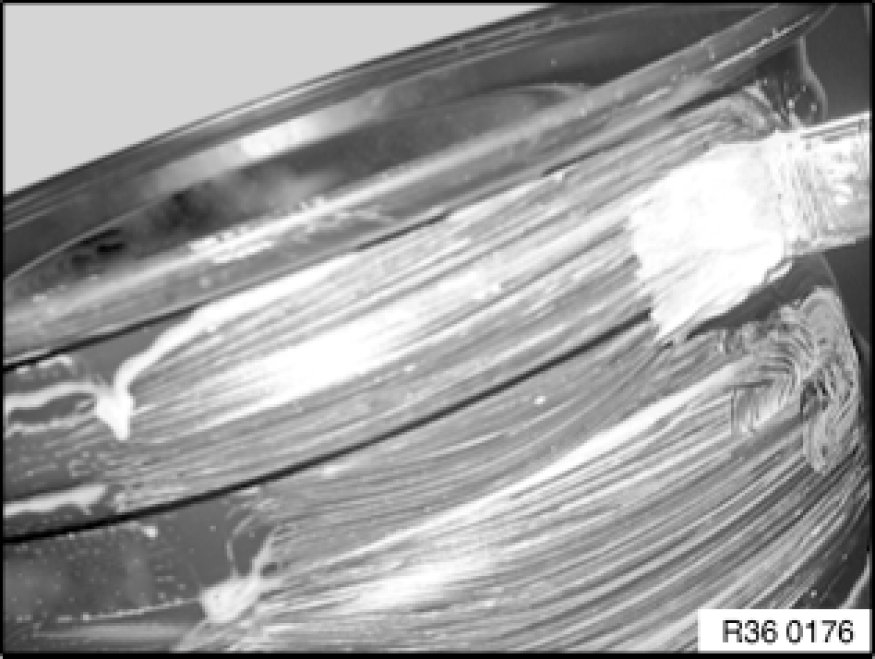
Apply antiseize compound over entire well area.
Lever sensor spare.
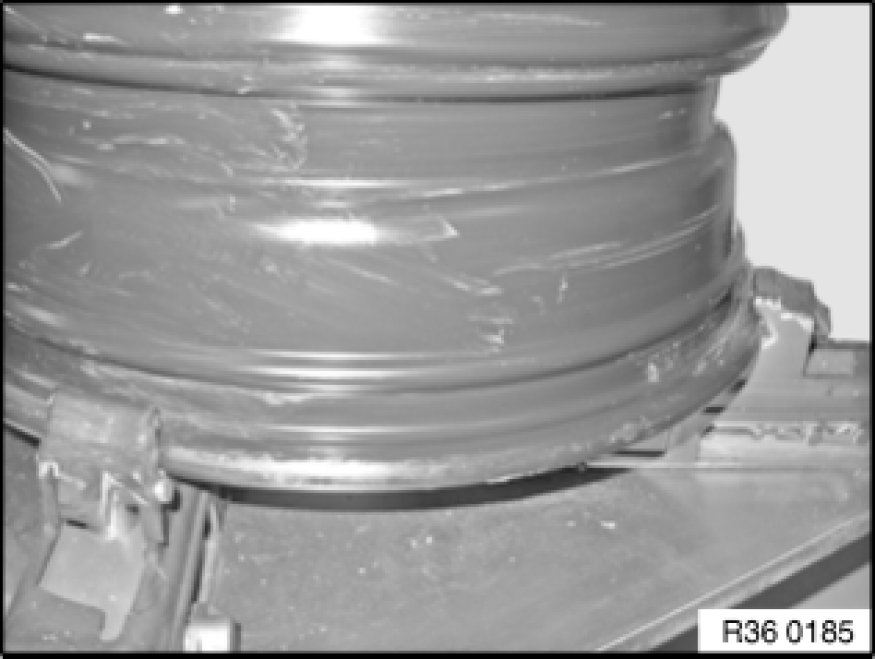
Fitting - lower bead:
Grip wheel and lay on tire.
Important!
Apply a light coating of antiseize compound to fitting head.
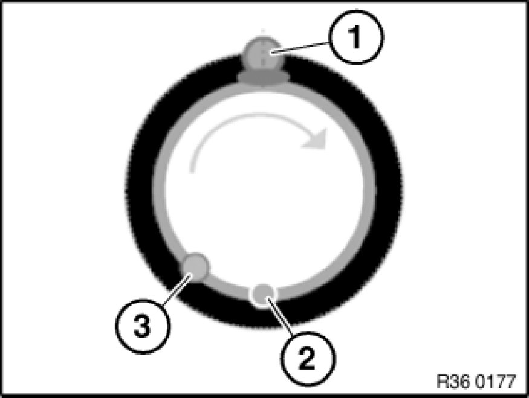
Position fitting head (1) as pictured.
Important!
Make sure tire is correctly positioned on fitting head. Position bead in relation to fitting head (1) in accordance with equipment manufacturer's instructions.
Position sensor (RDC) (3) and valve min. 10-15 cm before traction point/catching point (2).
Sensor must not be subjected to load.
Allow fitting machine to rotate slowly.
Guide tire in direction of rotation and press towards well.
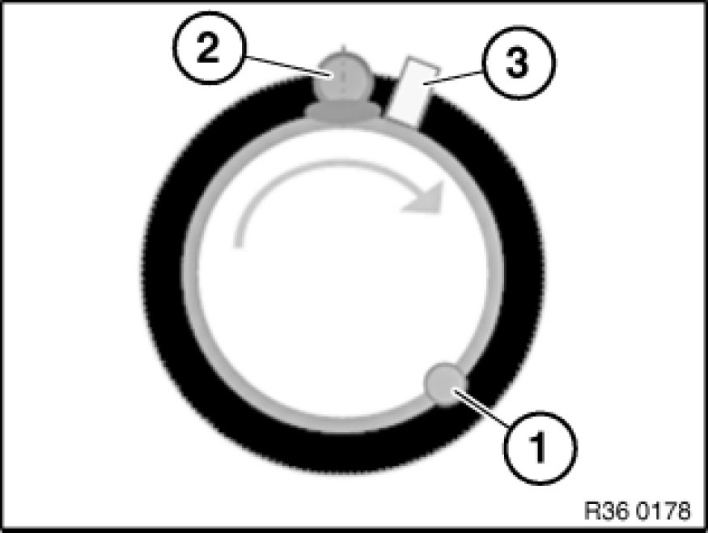
Fitting - upper bead:
Position sensor (1) in relation to fitting head (2) as pictured.
Important!
Make sure tire is correctly positioned on fitting head. Position bead in relation to fitting head (2) in accordance with equipment manufacturer's instructions.
Position sensor (RDC) (1) and valve min. 10-15 cm before traction point/catching point.
Sensor must not be subjected to load.
Coat bead holding-down element (3) with antiseize compound and insert.
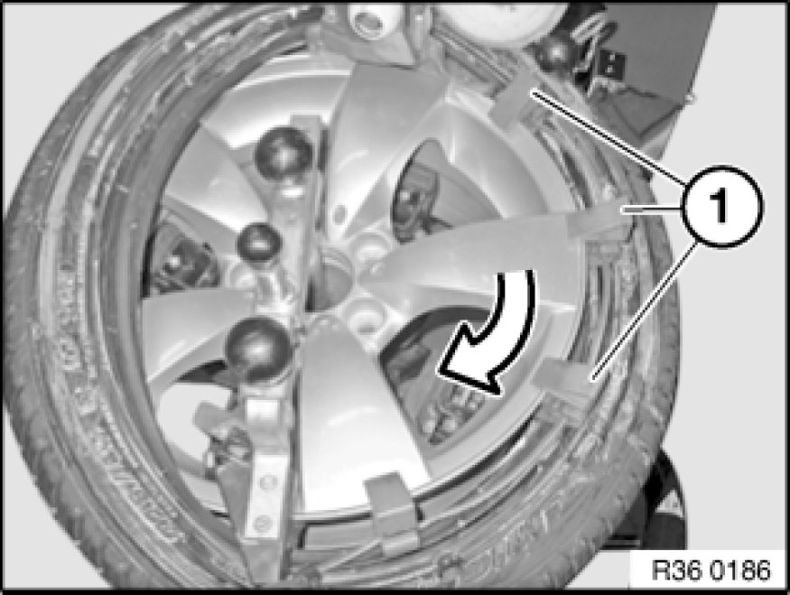
Allow fitting machine to rotate slowly.
Insert additional bead holding-down elements (1) to hold the bead in the well.
The last part of the bead should jump over the rim flange in the sensor area.
Important!
Perform fitting in stages, take short breaks and relieve tension.
Avoid heavy deformations at the traction point.
Do not squash belt edge and sidewalls through holding-down elements.
Never use a tire iron as a holding-down element.
Filling/inflating tire:
Remove all fitting aids.
Important!
Possibilities for safely securing the wheel or incorporation in inflation apparatus should be utilized!
Observe instructions/conditions of trade association.
Observe national/country-specific regulations.
Inflate with air (without valve insert).
- Increase pressure up to 3.3 bar in stages (jumping pressure).
- If the tire bead does not slip fully past the rim edge all round, do not under any circumstance increase the pressure.
- If necessary, release air and force off tire bead again.
- Coat rim flange and tire again with tire mounting paste.
- Inflate tire again up to 3.3 bar.
- When tire beads are resting perfectly on rim shoulders, increase inflation pressure to max. 4.0 bar (settling pressure) to "settle" the tire.
Screw in valve insert and correct tire pressure.
Observe notes/instruction on initializing the Run Flat Indicator 36 11 000 Initializing Run Flat Indicator (RPA) (RPA) or RDC (USA=TPM).
Important!
Advise the customer to avoid heavy acceleration and heavy braking in the initial period.
The mounting paste can cause the tire to turn on the rim and give rise to imbalance.